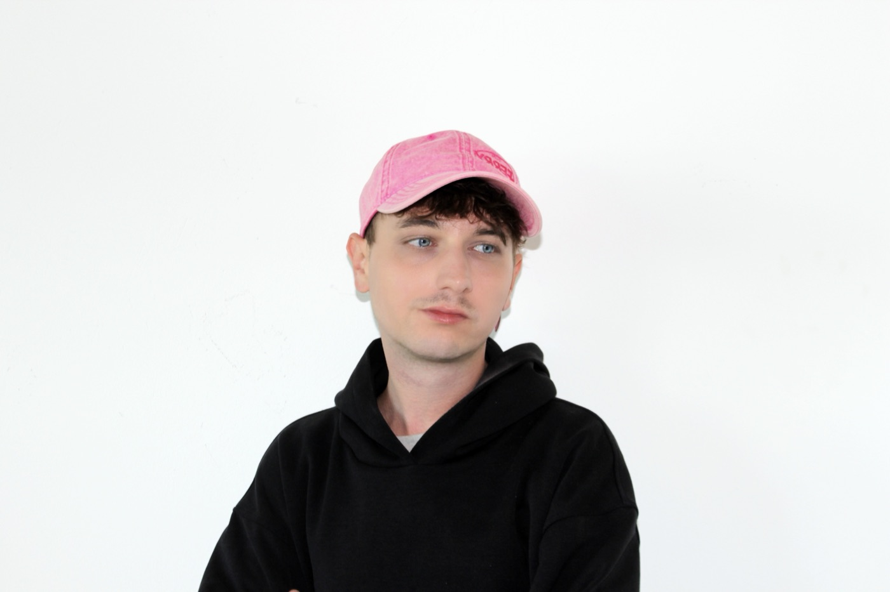
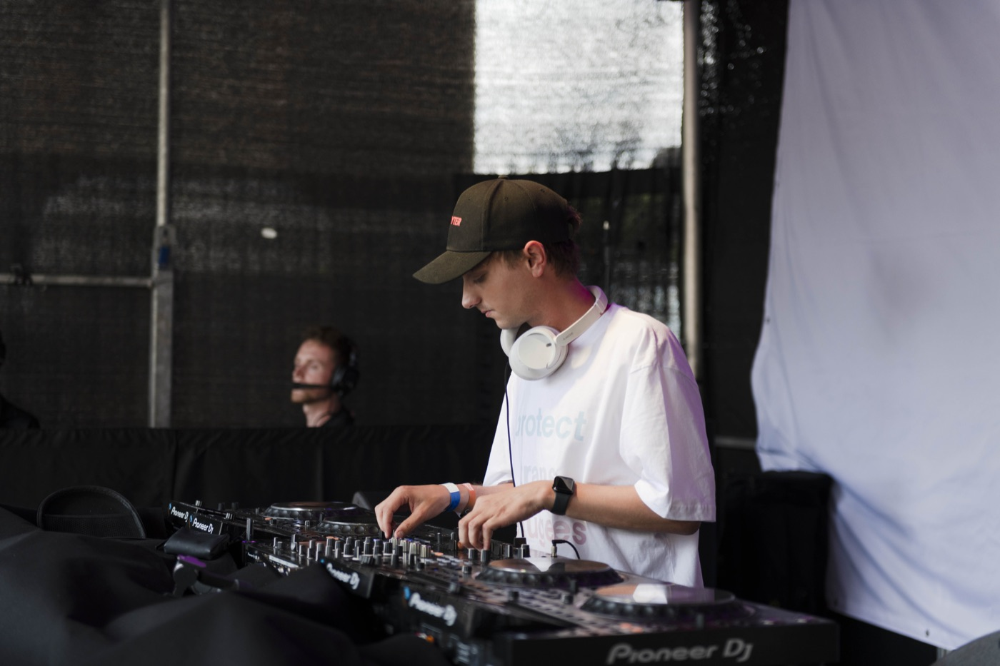
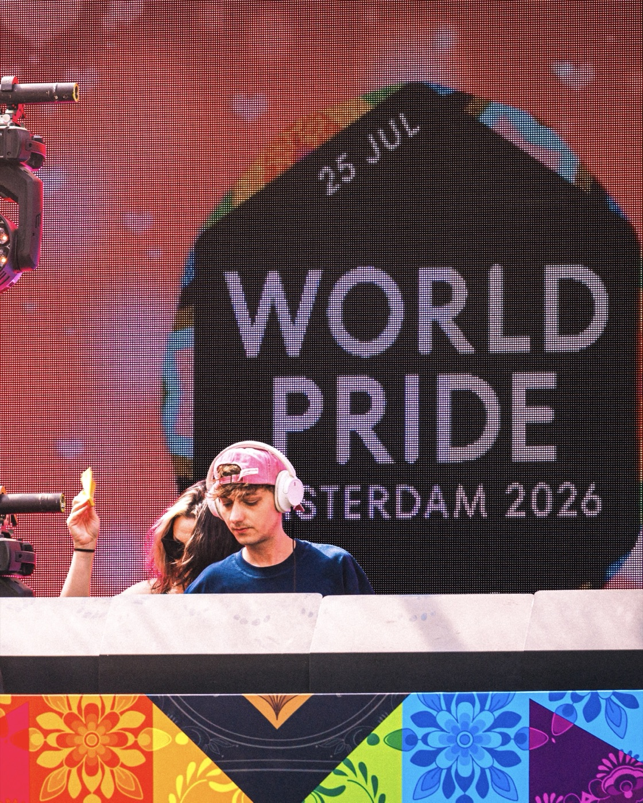
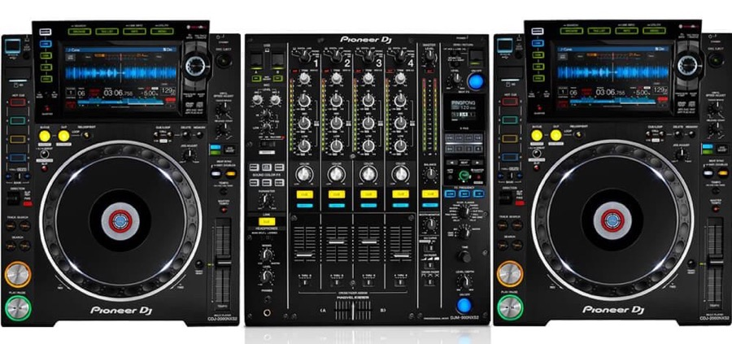
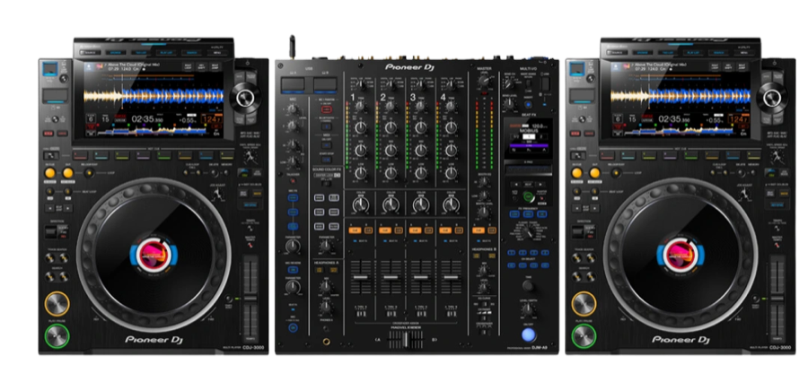

For press, promoters and line-ups
Press kit.
Photos, logos, bios and how to write the name.
For press, promoters and line-ups
Photos, logos, bios and how to write the name.
Tap a photo to download the full-size original.



Free to use for press, line-ups and promotion of FREY. No credit needed. Please don't crop or edit the logo, and don't use the photos to suggest FREY. endorses something.
Pick a length. Copy copies what you see.
Raised on Gaga, Britney and ABBA. Found religion in the queer club scene. Amsterdam-based DJ FREY. plays pop-girl bops with hyperpop and house peaks. Regular at NYX, FERRY and Paradiso. Played Milkshake, WorldPride, Homomonument and Hullabaloo, and internationally.
Raised on Gaga, Britney and ABBA. Found religion in the queer club scene. Amsterdam-based DJ FREY. plays pop-girl bops with hyperpop, dance and house peaks, for dance floors that sing along. A regular at NYX, FERRY and Paradiso, and played Milkshake, WorldPride, Homomonument and Hullabaloo, in the Netherlands and internationally across Europe and Asia.
Raised on Gaga, Britney and ABBA. Found religion in the queer club scene. Amsterdam-based DJ FREY. plays pop-girl bops for dance floors that sing along.
FREY. started DJing in 2015, took a break, and came back at a friend's Halloween party in 2022. One night was enough to remember what had been missing: building a set, reading a room and sharing pop moments with a crowd.
Since then, FREY. has become a regular at NYX, FERRY and Paradiso, and has played Milkshake, WorldPride, Homomonument and Hullabaloo, in the Netherlands and internationally across Europe and Asia. Sets go from pop to hyperpop, dance and four-to-the-floor, with remixes, own edits and the tracks you didn't know you needed. Big singalongs, harder peaks, all in one night.
Capitals, with the full stop. Every time.
At the end of a sentence, one full stop does both jobs: "Tonight: FREY." Not "FREY..".
Everything I need to play.


Black or white FREY, always with the pink dot. SVG for print, PNG for everything else.
Keep the height of the letter E free on every side, and don't recolour the dot.